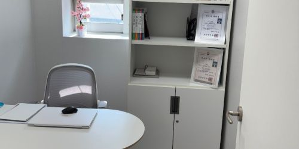
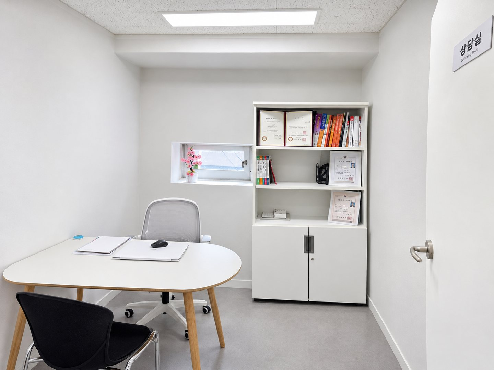

지혜간호학원청량리점
서울 동대문구 청량리동
지혜간호학원 청량리점
동북권 교통의 요지 청량리에 위치. KTX·GTX-B·지하철 6개 노선이 교차하는 최적의 위치에서 체계적인 간호교육을 제공합니다. 강원·경기북부에서도 편리하게 통학 가능합니다.
- 전문 간호학 강사진
- 청량리역 4번 출구 도보 2분
- 평일 09:00~22:00
1기 수강생 모집 중! KTX·GTX-B·지하철 6개 노선 청량리역 도보 2분
(주)국민평생학습센터 제휴 — 간병사·병원동행매니저·병원코디네이터·산후관리사 등 추가 자격증 업계 최저가 취득
지점 소개
교통의 요지에서 시작하는 합격, 청량리점
KTX·GTX-B 등 여러 노선이 지나는 청량리역 인근으로
강원·경기북부에서도 통학하기 편리합니다.
간호조무사 과정을 주간·야간반으로 운영하며
4050 재취업과 지역 의료기관 취업까지 돕습니다.
청량리점 수강생 전용 혜택: 전 과정 자격증 발급비용 업계 최대 할인
- 개원
- 2026년
- 반 정원
- 90명
- 운영시간
- 09:00~22:00
- 교통
- 청량리역 4번 출구 도보 2분
- 취업연계
- 다양한 진료과목 병·의원 중 원하는 곳으로


커리큘럼
입학부터 자격증까지 1년 과정
3월 ~ 다음해 3월 과정
- 3월
입학식 · 오리엔테이션 · 기초수업 OT
- 4월
해부생리학 · 기본간호학 · 의학용어 · 병원실기
- 5월
성인간호학 · 아동간호학 · 노인간호학 · 약리학
- 6월
응급간호학 · 보건간호학 · 간호관리학 · 공중보건학 OT
- 7월
병원실습 · 병원실기학 재교육 및 교과목 요약정리
- 8월
종합병원 실습
- 9월
종합병원 실습(400시간)
- 10월
의원급 병원 실습
- 11월
의원급 병원 실습(380시간)
- 12월
과목별 총정리, 국가고시 서류 준비
- 1월
과년도 국가고시 문제집 풀이 및 국가고시 서류 접수
- 2월
모의고사 시험 및 미진한 과목 보충, 신체검사
- 3월
간호조무사 자격시험 응시, 자격증 교부 및 대학 진학상담
9월 ~ 다음해 9월 과정
- 9월
입학식 · 오리엔테이션 · 기초수업 OT
- 10월
해부생리학 · 기본간호학 · 의학용어 · 병원실기
- 11월
성인간호학 · 아동간호학 · 노인간호학 · 약리학
- 12월
응급간호학 · 보건간호학 · 간호관리학 · 공중보건학 OT
- 1월
병원실습 · 병원실기학 재교육 및 교과목 요약정리
- 2월
종합병원 실습
- 3월
종합병원 실습(400시간)
- 4월
의원급 병원 실습
- 5월
의원급 병원 실습(380시간)
- 6월
과목별 총정리, 국가고시 서류 준비
- 7월
과년도 국가고시 문제집 풀이 및 국가고시 서류 접수
- 8월
모의고사 시험 및 미진한 과목 보충, 신체검사
- 9월
간호조무사 자격시험 응시, 자격증 교부 및 대학 진학상담
강사진
청량리점 전문 강사진
-
김도균 선생님
기초간호
임상 실무 (성인간호) 중심 지도
강사 이력 보기
주요 이력
- 삼성서울병원 수술실
- 경희대학교 간호학 박사수료
- 『진료지원 업무 매뉴얼 1 & 2』 저서
지도 분야
- 임상 간호학 핵심 개념 정리
- 간호조무사 국가시험 출제 포인트 지도
- 실습 전후 학습 피드백
-
신혜원 선생님
청량리점 원장
기초 의학·간호 이론 전문 강사
강사 이력 보기
주요 이력
- 경희대학교병원 간호사
- 병원코디네이터, BLS등
- 분당 차병원 간호사
지도 분야
- 해부생리·병리 등 기초 의학
- 간호 이론 기본기 확립
- 용어 이해와 반복 문제 풀이
-
김유미 선생님
공중보건 & 보건간호
국가시험 출제 포인트 지도
강사 이력 보기
주요 이력
- 전담 간호사
- 명지병원 간호사
- 분당차병원 간호사
지도 분야
- 간호조무사 국가시험 출제 포인트 지도
- 이해와 반복 학습을 통한 점수 획득
수강료
수강료 안내
| 과정명 | 기간 | 수강료 | 포함 내용 | 비고 |
|---|---|---|---|---|
| 간호조무사 정규과정 | 1,520시간 | 280만원 | 실습복 | 주간이론 740시간+ 주간 실습780시간 |
| 간호조무사 야간과정 | 1,520시간 | 280만원 | 실습복 | 주간실습 780시간 + 야간이론 740시간 |
| 재수생 특별반 | e널싱 온라인수업 | 월19,900원 | 교재·특별관리 | ※재수강자 대상 |
(주)국민평생학습센터 제휴 특별 혜택
청량리점 수강생 전용 — 간병사·병원동행매니저·병원코디네이터·산후관리사 등 추가 자격증 업계 최저가 취득 가능
국비지원(내일배움카드) 대상자는 훈련비 지원을 받을 수 있습니다. 국비지원 안내 보기
합격 후기
청량리점 후기
-
★★★★★
처음 학원 알아볼 때 걱정도 많았는데, 다녀보니 왜 추천이 많은지 알겠더라고요! 일단 시설이 정말 깔끔하고 쾌적해서 공부하기 좋고, 원장님 강의가 진짜 이해하기 쉽게 설명해주셔서 어려운 내용도 쏙쏙 들어옵니다. 수업, 실습, 학생 관리까지 전부 만족하고 간호조무사 준비하시는 분들께 꼭!! 추천하고 싶어요!! 저는 다시 선택해도 여기 다닐 것 같아요!
강*정 30대청량리점 수강생 -
★★★★★
간호조무사 준비를 앞두고 고민이 많았는데, 상담 받으며 마음이 확 놓였습니다. 제 상황을 진심으로 고려해 목표를 잡아주시는 모습에 정말 감동했거든요. 특히 잘 갖춰진 학원 시설을 보니 공부 의욕이 더 생기더라고요. 시설부터 커리큘럼까지 완벽해서 앞으로의 과정이 기대됩니다!
박*화 50대청량리점 수강생 -
★★★★★
경단녀로 요즘 취업고민이 많아서 학원에 등록했습니다. 여러 군데 알아보다가 방문했는데, 원장님의 배려심이 돋보였습니다. 저처럼 육아 병행해야 하는 경우 무엇보다 스케줄 조절이 큰 걱정부분인데, 현실적인 조언을 많이 해주셔서 믿음이 가더라구요. 역에서도 가까워 통학하기 편할 것 같아요.
김*리 40대청량리점 수강생
- 지하철
- 1호선·경의중앙선·경춘선·수인분당선 청량리역 4번 출구 도보 2분
- KTX·ITX·GTX
- 청량리역 KTX·ITX-청춘·GTX-B 하차 후 도보 5분 · 강원·경기북부 통학 가능
- 버스
- 청량리역 정류장 하차 · 다수 노선 운행
- 자동차
- 학원 주차 가능 · 사전 연락 바랍니다
공지사항
청량리점 소식
- 신규
청량리점 1기 수강생을 설레는 마음으로 기다립니다!
- 이벤트
(주)국민평생학습센터 제휴 — 추가 자격증 업계 최저가 취득 이벤트
- 공지
주간반(09:00~13:00) / 야간반(18:00~21:50) 동시 모집
청량리점 상담
청량리점
무료 상담 신청
전문 상담사가 자세히 안내해 드립니다.
- 청량리점 직통 전화
- 02-6014-3819
- 카카오톡 상담
- @지혜간호학원청량리점
- 상담 시간
- 평일 09:00~22:00